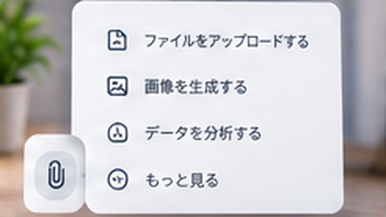

ChatGPTに画面を見せながらWebサイト設定を進めるコツ
ChatGPTへWebサイトの設定画面を見せながら作業するときに、スクリーンショットと現在の状況を使って一手ずつ確認するコツを解説します。

結論
ChatGPTに画面を見せながらWebサイト設定を進めるときは、現在の画面を共有し、「この画面から次に何を1つ操作すればよいか」を確認しながら進める方法が分かりやすいです。
Webサービスの管理画面は更新されるため、古い手順を一気に10ステップ進めるより、実際の画面が変わるたびに確認した方が食い違いを見つけやすくなります。
最初に目的を書く
スクリーンショットと一緒に、最終的に何をしたいか伝えます。
GitHub Pagesでサイトを公開したいです。
今はこの画面です。
次に行う操作を1つだけ教えてください。目的が分かれば、同じ画面でも必要な操作を絞りやすくなります。
画面全体が分かる画像を用意する
ボタンだけを極端に切り取ると、どのサービスのどの設定画面なのか判断しにくくなる場合があります。
サービス名、ページ名、主要なメニューなど状況を判断できる範囲を残しつつ、個人情報や秘密情報は除きます。
一手ずつ進める
設定作業では、1回の操作で次の画面が予想と変わることがあります。
「次に押す場所を1つだけ」「押した後に画面が変わったらまた画像を送る」という進め方なら、途中で表示が違ったときに修正しやすくなります。
画面が違ったらそのまま伝える
ChatGPTから「Settingsを開いて」と言われても、その項目が見当たらない場合があります。
無理に似たボタンを押さず、現在のスクリーンショットとともに「Settingsが見つかりません」と伝えます。プラン、権限、画面更新などで表示が異なる可能性を切り分けられます。
エラーが出たら操作を続けない
エラーが表示されたら、次の手順へ進む前にエラー内容を確認します。
エラー画面と「直前に押したボタン」「入力した値の種類」を共有すると、原因を整理しやすくなります。パスワードやトークンなどは画像から除いてください。
変更前の状態を残す
DNS、ドメイン、デプロイ、アクセス権など重要な設定を変更するときは、変更前の値を自分で記録しておきます。
ChatGPTの回答が誤っていた場合でも、元の設定へ戻せるようにしてから操作します。
最後は公式情報も確認する
Webサービスの設定画面は頻繁に変わります。
課金、ドメイン、公開範囲、権限、削除など影響が大きい設定では、ChatGPTの案内だけで確定せず、サービスの現在の公式ヘルプや画面上の説明も確認します。
まとめ
ChatGPTと画面を見ながら設定する場合は、目的を伝え、現在のスクリーンショットを共有し、1操作ずつ進めると画面差分へ対応しやすくなります。表示が違う場合は推測で進めず、新しい画面を共有して確認してください。
親記事

企業の情報システム・DX推進・マーケティング業務などを経験。PC・Webサービス・業務自動化など、実際に試して分かったことを初心者向けに解説しています。
運営者情報を見る →